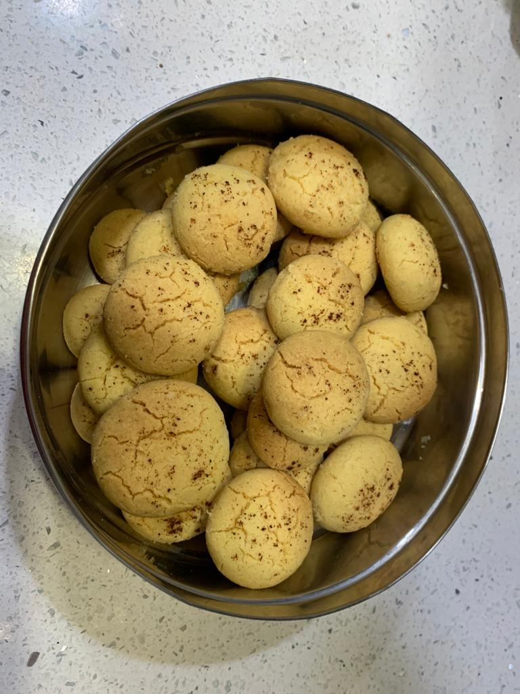

KHATAI

INGREDIENTS
- Maida
- gram flour
- ghee
- powdered sugar
- cardamom powder
- Baking powder
- baking soda
- milk
- pista
INSTRUCTIONS
- Preheat oven to 180 degree C. Line a baking tray with foil and set aside.
- Take flour,gram flour,baking soda,baking powder in a bowl and mix well.
- Take a ghee,powdered sugar,cardamom powder in a bowl and use a whisk to mix well.
- Now add in the flour mix and fold well. Add milk and knead to a soft dough.
- Take small portion of the dough and roll it into a ball.Dip it into the chopped pista and arrange it in a tray.
- Bake for 15-20 min.
- Remove from oven and let it cool completely
- Store in air tight container and Serve